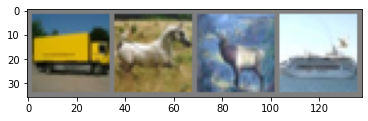

#import necessary modules
import torch
import torch.nn as nn #NeuralNetwork module
import torch.nn.functional as F
import torchvision
import torchvision.transforms as transforms
import matplotlib.pyplot as plt
import numpy as np
# Device configuration
device = torch.device('cuda' if torch.cuda.is_available() else 'cpu')
dataset_dir = 'data/'
# Hyper-parameters
num_epochs = 5
batch_size = 4
learning_rate = 0.001This tutorial is adopted from Python-Engineer’s Pytorch Tutorial | Video
Good reading links: - CMU’s CS231 Course
Convolutional neural network is used to train CIFAR-10 dataset. It is implemented in PyTorch
What does it consists of?
The CIFAR-10 dataset consists of 60000 32x32 colour images in 10 classes, with 6000 images per class. There are 50000 training images and 10000 test images.
The dataset is divided into five training batches and one test batch, each with 10000 images. The test batch contains exactly 1000 randomly-selected images from each class. The training batches contain the remaining images in random order, but some training batches may contain more images from one class than another. Between them, the training batches contain exactly 5000 images from each class.
What’s a CNN?
Same as NN but are optimized for image analysis. Before training the weights and biases in the full-connected layer the training data is ‘screened and filtered’ to tease out relevant features of each image by passing each image through a prescribed filter and ‘convolutions’. Think of it like passing a colored lens or fancy ink to selectively look at edges, contrasts, shapes in the image.
Finally that a projection of that image is made by ‘pooling’ which is a way of down-sampling the resulting convolution as a new data-point.
 Schematic CNN architecture
Schematic CNN architecture
Loading the data
Dataset has PILImage images of range [0, 1]. We transform them to Tensors of normalized range [-1, 1]
# dataset has PILImage images of range [0, 1].
# We transform them to Tensors of normalized range [-1, 1]
transform = transforms.Compose(
[transforms.ToTensor(),
transforms.Normalize((0.5, 0.5, 0.5), (0.5, 0.5, 0.5))])
# CIFAR10: 60000 32x32 color images in 10 classes, with 6000 images per class
#Importing the training set for the CIFAR10 dataset
train_dataset = torchvision.datasets.CIFAR10(root=dataset_dir, train=True,
download=True, transform=transform)
#Importing the testing set for the CIFAR10 dataset
test_dataset = torchvision.datasets.CIFAR10(root=dataset_dir, train=False,
download=True, transform=transform)Downloading https://www.cs.toronto.edu/~kriz/cifar-10-python.tar.gz to data/cifar-10-python.tar.gzExtracting data/cifar-10-python.tar.gz to data/
Files already downloaded and verifieddef imshow(img):
img = img / 2 + 0.5 # unnormalize
npimg = img.numpy()
plt.imshow(np.transpose(npimg, (1, 2, 0)))
plt.show()#Define data-loader classs and labels for the images in the dataset
train_loader = torch.utils.data.DataLoader(train_dataset, batch_size=batch_size,
shuffle=True)
test_loader = torch.utils.data.DataLoader(test_dataset, batch_size=batch_size,
shuffle=False)
classes = ('plane', 'car', 'bird', 'cat',
'deer', 'dog', 'frog', 'horse', 'ship', 'truck')# get some random training images
dataiter = iter(train_loader)
images, labels = dataiter.next()
# show images
imshow(torchvision.utils.make_grid(images))
print('Images of: {}'.format([classes[i] for i in labels]))
print('Size of the image array for a given batch: {}'.format(images.shape))
Images of: ['truck', 'horse', 'deer', 'ship']
Size of the image array for a given batch: torch.Size([4, 3, 32, 32])Testing the convolutions
Before implementing the CNN for the image recognition let’s see what the convolutions and the pooling layers do the images
Convolution is the first layer to extract features from an input image. It preserves the relationship between pixels by learning images features using small squares of input data. It’s a matrix operation that takes two inputs – image matrix and a filter/kernel
Two main hyper-parameters for the pooling layers: 1. Stride – controls how filters ‘slides’ on the input volume. Stride is normally set in a way so that the output volume is an integer and not a fraction. Increase the stride if you want receptive fields to overlap less and want smaller spatial dimensions
- Padding –
 Image matrix multiplies kernel or filter matrix
Image matrix multiplies kernel or filter matrix
 3 x 3 Output matrix
3 x 3 Output matrix
Calculating the output size of the image after convolutions:
To calculate the output size of the image after convolution layer:
\[O = \frac{W - F + 2P}{S} + 1\]
where O is the output height/length, W is the input height/length, F is the filter size, P is the padding, and S is the stride.
Pooling layers
Pooling layers section would reduce the number of parameters when the images are too large. Spatial pooling also called subsampling or downsampling which reduces the dimensionality of each map but retains important information. Spatial pooling can be of different types: 1. Max Pooling 2. Average Pooling 3. Sum Pooling
Max pooling takes the largest element from the rectified feature map. Taking the largest element could also take the average pooling. Sum of all elements in the feature map call as sum pooling.
 Max pooling scheme
Max pooling scheme
conv1 = nn.Conv2d(in_channels=3, out_channels=6, kernel_size=5, stride=1, padding=0)
pool = nn.MaxPool2d(kernel_size=2, stride=2, padding=0) #Take max of the 2x2 array and shift by 2
conv2 = nn.Conv2d(in_channels=6, out_channels=16, kernel_size=5, stride=1, padding=0)print(images.shape)
x = conv1(images)
print(x.shape)torch.Size([4, 3, 32, 32])
torch.Size([4, 6, 28, 28])x = pool(x)
print(x.shape)torch.Size([4, 6, 14, 14])x = conv2(x)
print(x.shape)torch.Size([4, 16, 10, 10])x = pool(x)
print(x.shape)torch.Size([4, 16, 5, 5])Building the CNN class
class ConvNet(nn.Module):
'''
Inherit from the nn.Module all the necessary routines
super() is in the business of delegating method calls
to some class in the instance’s ancestor tree.
Conv1 = First convolution 3 color channels (RGB) to 6 output,
filter size=5
pool = Max pool layer of 2x2 and stride of 2 ie. we shift 2
pixel to the right after each pooling operations
Conv2 = Second convolution layer with 6 input channel and
16 output channel, filter size of 5
Full connected layer
FC1 = Flatten output of the final convolution + pooling (16 * 5 * 5)
to 120 dim array
FC2 = 120 to 84
FC3 = 84 to no of hidden equal to that of class labels
Forward operation
-----------------------
images --> conv --> relu --> pool --> conv2 --> relu --> pool
Flatten pooled output --> FC (w/ relu) --> FC (relu) --> FC --> output
'''
def __init__(self):
super(ConvNet, self).__init__()
#Here we built the architecture for the CNN
#First conv1 function instantiation
self.conv1 = nn.Conv2d(3,6,5)
#General purpose pooling
self.pool = nn.MaxPool2d(2,2)
#Second conv2 function instantiation
self.conv2 = nn.Conv2d(6,16,5)
#1st NN layer
self.fc1 = nn.Linear(16*5*5,120)
#2nd NN layer
self.fc2 = nn.Linear(120,84)
#Final output layer
self.fc3 = nn.Linear(84,10)
def forward(self, x):
#Two pooling operations
x = self.pool(F.relu(self.conv1(x))) # -> n, 6, 14, 14
x = self.pool(F.relu(self.conv2(x))) # -> n, 16, 5, 5
#Flatten the output from pooling/convoltions
x = x.view(-1, 16 * 5 * 5) # -> n, 400
x = F.relu(self.fc1(x)) # -> n, 120
x = F.relu(self.fc2(x)) # -> n, 84
x = self.fc3(x) # -> n, 10
return xDefining the training criterion and optmizer
#Define model, criterion, optimizer for the GD
model = ConvNet().to(device)
#For multiclass classification -- crossentropy loss
criterion = nn.CrossEntropyLoss()
optimizer = torch.optim.SGD(model.parameters(), lr=learning_rate)Train the CNN on the test dataset
n_total_steps = len(train_loader)
for epoch in range(num_epochs):
for i, (images,labels) in enumerate(train_loader):
# origin shape: [4, 3, 32, 32] = 4, 3, 1024
# input_layer: 3 input channels, 6 output channels, 5 kernel size
images = images.to(device)
labels = labels.to(device)
#Forward pass
outputs = model(images)
loss = criterion(outputs, labels)
#Backward prop and optimize
optimizer.zero_grad()
loss.backward()
optimizer.step()
if (i+1) % 2000 == 0:
print (f'Epoch [{epoch+1}/{num_epochs}],\
Step [{i+1}/{n_total_steps}],\
Loss: {loss.item():.4f}')
print('Finished Training')
PATH = './cnn.pth'
torch.save(model.state_dict(), PATH)with torch.no_grad(): #We dont need backward propogation here
n_correct = 0
n_samples = 0
n_class_correct = [0 for i in range(10)]
n_class_samples = [0 for i in range(10)]
for images, labels in test_loader:
images = images.to(device)
labels = labels.to(device)
outputs = model(images)
# max returns (value ,index)
_, predicted = torch.max(outputs, 1)
n_samples += labels.size(0)
n_correct += (predicted == labels).sum().item()
for i in range(batch_size):
label = labels[i]
pred = predicted[i]
if (label == pred):
n_class_correct[label] += 1
n_class_samples[label] += 1
acc = 100.0 * n_correct / n_samples
print(f'Accuracy of the network: {acc} %')
for i in range(10):
acc = 100.0 * n_class_correct[i] / n_class_samples[i]
print(f'Accuracy of {classes[i]}: {acc} %')Accuracy of the network: 48.28 %
Accuracy of plane: 55.7 %
Accuracy of car: 62.1 %
Accuracy of bird: 26.1 %
Accuracy of cat: 34.2 %
Accuracy of deer: 31.0 %
Accuracy of dog: 33.3 %
Accuracy of frog: 75.1 %
Accuracy of horse: 50.0 %
Accuracy of ship: 58.7 %
Accuracy of truck: 56.6 %